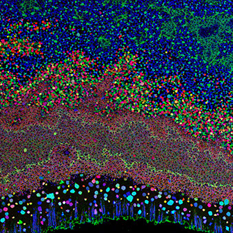

Dasha Pruss
This page is currently under construction. You can learn about other projects on the 'Projects' page.
_
I do data visualization research with Professor Miriah Meyer in the Vis Design Lab of the Scientific Computing and Imaging Institute. My current research project focuses on visualizing the retinal connectome (neural connections between cells in the retina), in collaboration with Ethan Kenzner of the Vis Design Lab and the Marc Laboratory of the Moran Eye Center.
_
What is a Connectome? From the Marc Lab:Molecular fireworks in the retina.Comparative Mammalian Brain Collection
a
"Genomics is an attempt to map the human genome. A similarly ambitious goal is connectomics: mapping all the connections in the brain and retina."
_
Why is mapping these connections important?
_
"Just as the brain pathologically "rewires" in neurologic disease, the retina "rewires" in retinal degenerations." The ability to visualize and understand connectome maps is essential to understanding neurological and retinal disorders.
_
From a visualization perspective, the network of cells in the retina and all the ways in which they are connected can be understood as a huge, dense graph. "A cube of brain smaller than a pencil point contains over 10,000 nerve cells, over ten million connections, and more possible connection patterns than stars in the known universe." Because of the sheer number of cells and cellular connections, the issue of visualizing and analyzing different neural paths between two cells or groups of cells is an extremely complex problem.
_
"With conventional tools, mapping this tiny piece of brain would take centuries to millenia... Anatomic tools have not been able to cope with the labyrinth of normal brain connections, much less explore neurological disorders. The Marclab, in collaboration with teams at the University of Utah Scientific Computing and Imaging Institute and the University of Colorado / Boulder has completed the first connectome dataset: the Retinal Connectome for vision. The tools used to build this connectome are unique in neuroanatomy and freely available to all."